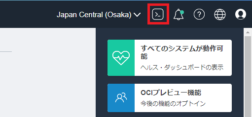
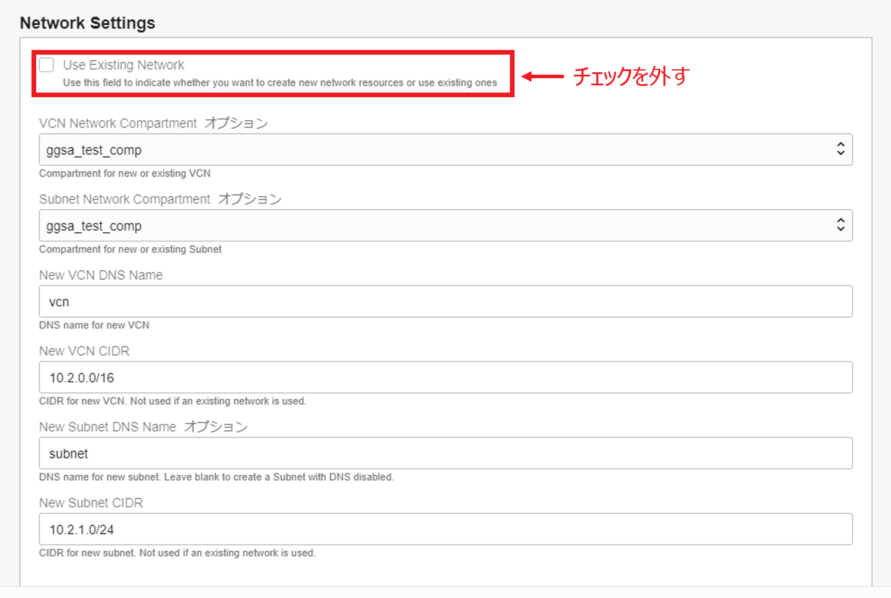
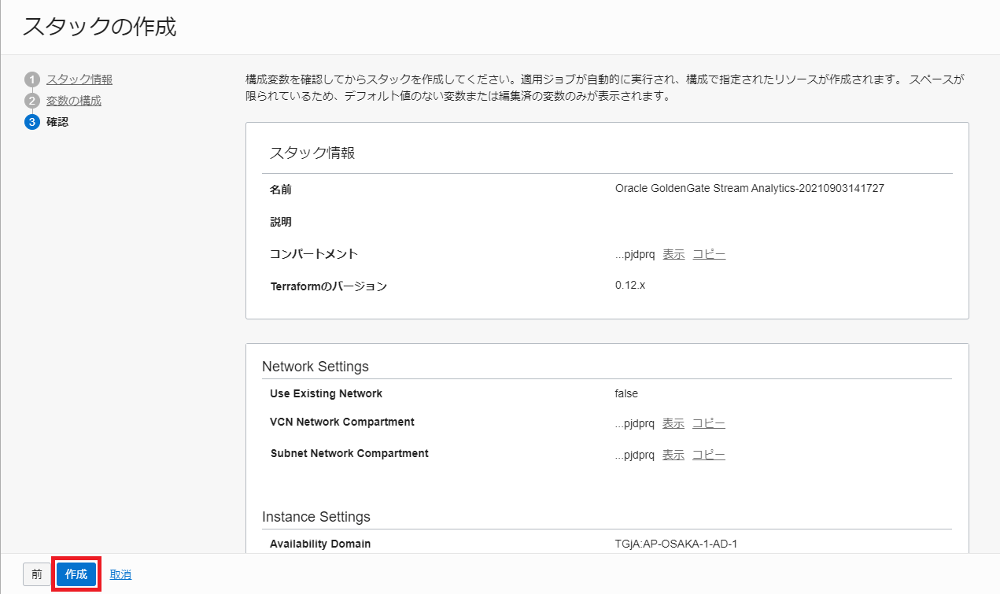
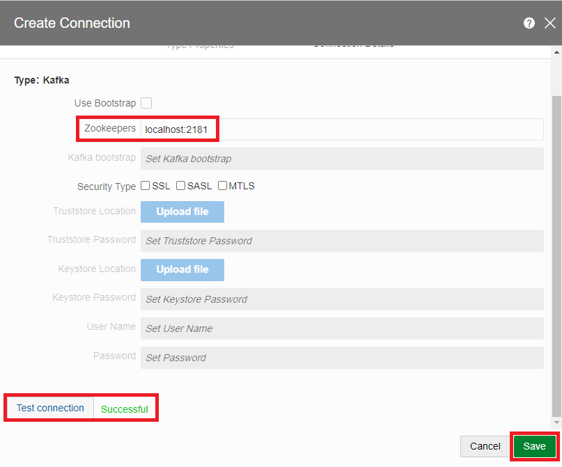
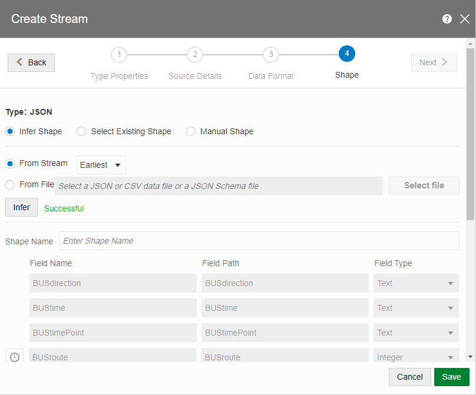
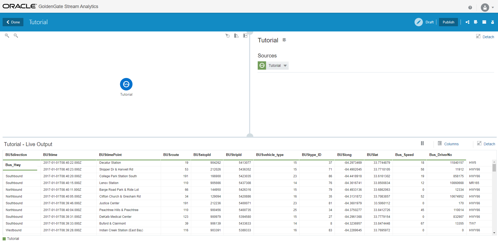
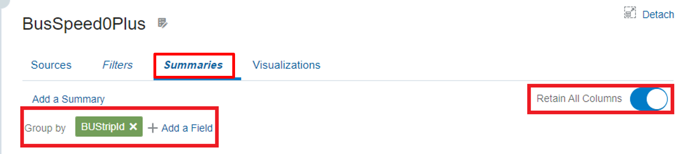
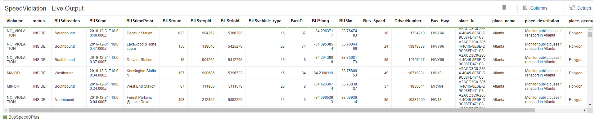
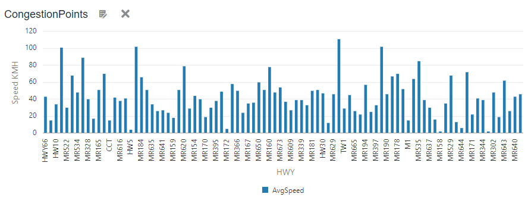

Oracle GoldenGate Stream Analytics(以下、GGSA) は、IoT データ、パイプライン、ログデータ、ソーシャルメディアといった Stream データをリアルタイムに分析的計算処理するテクノロジーを提供するプラットフォームです。
このエントリーでは、GGSA の Marketplace からのプロビジョニングからチュートリアル完了までの手順を記します。
前提条件
- クラウド環境
- Oracle Cloud のアカウントを取得済みであること
ハンズオン環境の全体像
OCI Marketplace から GGSA を最小構成でプロビジョニングすると、以下の環境が作成されます。本エントリーでは、この環境を用いてハンズオンを実施します。

作成する Pipeline の全体像
このエントリーでは、リアルタイムに流れてくる交通データを分析することを行います。最終的に完成する Pipeline は以下のようになります。

それぞれの Stage で実施されることについて簡単に説明します。
車両の走行データ
リアルタイムに流れてくる交通データを Java プログラムで疑似的に表現しています。Java プログラム中では、Kafka の特定 Topic(tutorial)に対してメッセージを publish しており、本ハンズオンは該当の Topic から メッセージを consume する所から始まります。
関連するハンズオンの章:
Atlanta の地図情報
使用するデータには、アメリカ全土の交通データが含まれています。今回は、その中でも Atlanta の交通データに絞り込んで分析を行うために、地理的な境界を定義します。
関連するハンズオンの章:
地理的境界で絞り込む
Atlanta の地図情報で定義した地理的境界に含まれるデータを入力データの緯度・経度を元に判定し、Atlanta 内の交通データに絞り込みを行います。
関連するハンズオンの章:
平均の速さを元に絞り込む
以降のステージでは、動いている車両に対して分析を行うため、その前処理として止まっている車両をストリームデータから取り除きます。
関連するハンズオンの章:
平均の速さを元にラベリングする
動いている車両に対して、いくつかのルールを設定しその判定結果に応じてラベリング、結果の可視化を行います。
関連するハンズオンの章:
Kafka に対して publish
パイプライン処理が完了したデータを別のサービスで活用するために Kafka に publish します。
関連するハンズオンの章:
ハンズオン手順
1. 事前準備
1-1. 鍵ペアの作成
本ハンズオンは、Oracle Cloud Infrastructure の Cloud Shell から 新しくプロビジョニングする GGSA のインスタンスに対して SSH 接続を行い実施します。まずは、OCI コンソール画面右上の Cloud Shell を押し、Cloud Shell を起動します。

SSH 接続に使用する鍵ペアを作成します。まずは、鍵ペアを保存するディレクトリを作成し、移動します。
mkdir .ssh; cd .ssh
鍵ペアを作成します。
ssh-keygen -t rsa -N "" -b "2048" -C "ggsa_hol" -f id_ggsa
作成した鍵ペアとディレクトリのアクセス権を修正します。
鍵ペア
chmod 600 *
ディレクトリ(.ssh)
cd; chmod 700 .ssh
以下のような状態となっていれば鍵ペアの作成は完了です。
ディレクトリ(.ssh)
ls -la | grep .ssh
コマンド実行結果
drwx------. 2 shuhei_kaw oci 40 Sep 26 05:37 .ssh
鍵ペア
ls -la .ssh
コマンド実行結果
total 12
drwx------. 2 shuhei_kaw oci 40 Sep 26 05:37 .
drwxr-xr-x. 11 shuhei_kaw oci 4096 Sep 26 05:37 ..
-rw-------. 1 shuhei_kaw oci 1679 Sep 26 05:37 id_ggsa
-rw-------. 1 shuhei_kaw oci 390 Sep 26 05:37 id_ggsa.pub
1-2. Marketplace からインスタンスのプロビジョニングで使用するため、公開鍵(id_ggsa.pub)の内容をメモ帳などに控えておきます。
1-2. Marketplace からインスタンスのプロビジョニング
OCI コンソール画面左上のハンバーガーメニューを展開し、マーケットプレイス > すべてのアプリケーション と選択します。

アプリケーションの一覧画面で、検索窓にStream Analyticsと入力し、Oracle GoldenGate Stream Analytics - UCM を選択します。

Oracle 使用条件を確認し上でこれに同意します。にチェックを入れた後に、スタックの起動をクリックします。

自動入力された項目を確認し、次をクリックします。

作成するインスタンスに関する情報を入力します。
- Display Name: 任意の名前
- Host DNS Name(オプション): ggsa

インスタンスが属するネットワークに関する設定を入力します。
- Use Existing Network: チェックを外す
- VCN Network Compartment(オプション): 任意のコンパートメント名
- Subnet Network Compartment(オプション): 任意のコンパートメント名(VCN Network Compartment と同様のコンパートメント名)
- New VCN DNS Name: vcn
- New VCN CIDR: 10.2.0.0/16
- New Subnet DNS Name(オプション): subnet
- New Subnet CIDR: 10.2.1.0/24

インスタンスに関する情報を入力します。
- Availability Domain: 任意の AD を選択
- Compute Shape: VM.Standard2.4
- Assign Public IP: チェックを入れる

インスタンスに SSH 接続するために1-1. 鍵ペアの作成で作成した公開鍵を入力します。

次をクリックした後に、入力内容を確認して、作成を押します。

リソース・マネージャーのジョブの状態が成功となっていれば、インスタンスのプロビジョニングは完了です。

下までスクロールすると、Resource Manager のログが出力されているため、以下のようなログが出力されていることを確認します。

Apply complete! Resources: 10 added, 0 changed, 0 destroyed.
Outputs:
ggesp_image_id = ocid1.image.oc1..aaaaaaaatdxy7rcotma5cjujpu3tqo4zbdvgfhg72eq6py3clrjuum62sngq
ggesp_instance_id = ocid1.instance.oc1.ap-osaka-1.anvwsljrssl65iqcw5jdn4ysrehcdxb2ixj43qrwytitc5ngcb2uqxusla5a
ggesp_public_ip = [ 140.83.87.172 ]
SSH 接続時に必要となるため、パブリック IP(ggesp_public_ip = [ 140.83.87.172 ]) をメモ帳などに控えておきます。
1-3. ハンズオンに使用するコンテンツのダウンロード
以降の作業は、Cloud Shell から1-2. Marketplace からインスタンスのプロビジョニングでプロビジョニングしたインスタンスに対して SSH 接続して行います。
ssh opc@<public-ip> -i ~/.ssh/id_ggsa
例:
ssh opc@140.83.87.172 -i ~/.ssh/id_ggsa
次に、ハンズオンに使用するコンテンツを任意のディレクトリにダウンロードし、展開します。ここでは、ホームディレクトリに ggsa という作業用のディレクトリを作成します。
cd ~; mkdir ggsa; cd ggsa
コンテンツをダウンロードします。
wget http://www.oracle.com/technetwork/middleware/complex-event-processing/learnmore/resourcesfortutorials-4015265.zip
展開します。
unzip resourcesfortutorials-4015265.zip -d resources
展開した先のディレクトリには以下のコンテンツが含まれていることを確認します。
ls resources/
コマンド実行結果
BusEvents.json OsacsEventFeeder.jar SalesTransactions.json suppliers.sql
1-4. プロビジョニングしたインスタンスの確認
Marketplace からプロビジョニングしたインスタンスのホームディレクトリに GGSA 関連の接続情報が README.txt に記されています。実際の内容は以下のようになっています。
cat README.txt
###### Database
Your root password for MySQL metadata store is +t8[M<O[ni+HiCmX%54(
Your OSA_DEMO user password for MySQL 'OSA_DEMO' database is Welcome123!
Your OSA user password for MySQL osa metadata store (OSADB database) is >+(SM-RWwXCnOz6_VXj>
###### VCN SECURITY RULES
To access OSA and Spark UIs from the internet via HTTPS, set up stateless ingress rules to port 443.
###### OSA UI
Your osaadmin password to login to OSA UI is x55j0wEGwfE=
You can access OSA UI using https://<PUBLIC_IP>/osa
###### OSA RUNTIME
Access Spark UI using https://<PUBLIC_IP>/spark
List of well known ports...
KAFKA BROKER PORTS (9092) ZOOKEEPER PORT (2181)
MYSQL PORT (3306)
###### SPARK DEFAULT USER CREDENTIALS
Username: sparkadmin
Password: Sparkadmin#123
###### CHANGING PASSWORDS
Use System Settings in OSA UI to change the OSA Admin password.
Use System Settings in OSA UI to set Spark admin user name and password.
Use mysql -uroot -p to change MySQL root user password.
本ハンズオンでは、OSA UI の接続情報が必要となるため、メモ帳などに控えておいてください。
###### OSA UI
Your osaadmin password to login to OSA UI is x55j0wEGwfE=
You can access OSA UI using https://<PUBLIC_IP>/osa
2. ハンズオン
2-1. ハンズオン用のイベント・ストリームを Kafka に Publish する
まずは、ハンズオン用の Topic(tutorial) を作成します。
$KAFKA_HOME/bin/kafka-topics.sh --create --zookeeper localhost:2181 --partitions 5 --replication-factor 1 --topic tutorial
コマンド実行結果
Created topic "tutorial".
次にダウンロードしたコンテンツに含まれる Java プログラムを使用して、作成した Topic に対してデータを送信します。
cd ~/ggsa/resources/; java -jar OsacsEventFeeder.jar --zookeeper localhost:2181 --json BusEvents.json --topic tutorial > /tmp/tutorial.`date "+%Y%m%d_%H%M%S"` 2>&1 &
コマンド実行結果(PID は一例)
[1] 6654
生成されたファイル名を確認します。
ls /tmp | grep tutorial
コマンド実行結果
tutorial.20211001_011436
Kafka に対するメッセージ送信が成功しているかどうかを確認します。
tail -f /tmp/tutorial.20211001_011436
コマンド実行結果
...
RESPONSE: Topic: tutorial, Offset: 766
REQUEST: { "BUSdirection" : "Eastbound", "BUStime" : "2016-12-31T14:23:37.000Z", "BUStimePoint" : "Brockett Rd. & E.Ponce De Leon", "BUSroute" : 120, "BUSstopId" : 902444, "BUStripId" : 5389198, "BUSvehicle_type" : 15, "BUStype_ID" : 55, "BUSlong" : -84.2298945, "BUSlat" : 33.8190495, "Bus_Speed" : 64, "Bus_DriverNo" : 11268, "Bus_Hwy" : "HWY66" }
RESPONSE: Topic: tutorial, Offset: 766
REQUEST: { "BUSdirection" : "Northbound", "BUStime" : "2016-12-31T14:23:37.000Z", "BUStimePoint" : "Flint River @ Thomas Rd", "BUSroute" : 191, "BUSstopId" : 212408, "BUStripId" : 5424437, "BUSvehicle_type" : 23, "BUStype_ID" : 61, "BUSlong" : -84.408493, "BUSlat" : 33.5183772, "Bus_Speed" : 0, "Bus_DriverNo" : 13139, "Bus_Hwy" : "HWY66" }
RESPONSE: Topic: tutorial, Offset: 767
...
REQUEST: { "BUSdirection" : "Eastbound", "BUStime" : "2016-12-31T14:23:37.000Z", "BUStimePoint" : "Brockett Rd. & E.Ponce De Leon", "BUSroute" : 120, "BUSstopId" : 902444, "BUStripId" : 5389198, "BUSvehicle_type" : 15, "BUStype_ID" : 55, "BUSlong" : -84.2298945, "BUSlat" : 33.8190495, "Bus_Speed" : 64, "Bus_DriverNo" : 11268, "Bus_Hwy" : "HWY66" } のような文字列が連続して出力され続ければ、Kafka に対するデータの送信が成功しています。
2-2. OSA UI で Kafka の Connection を定義する
ここからの作業は、OSA(Oracle Stream Analytics)の UI にて実施するため、ブラウザでhttps://<PUBLIC_IP>/osaへアクセスします。アクセスすると、以下のような画面が表示されるので、README.txtに記載のあるユーザー名／パスワードの組み合わせでログインします。(1-4. プロビジョニングしたインスタンスの確認 を参照)

ログイン後に、Catalog > Create New Item > Connection > Kafkaと押し、Kafka の接続情報を定義します。

以下のように入力し、Next > をクリックします。
- Name: Tutorial
- Tag(オプション): tutorial, transport
- Connection Type: Kafka

Kafka の接続情報を以下のように入力します。
- Zookeepers: localhost:2181
Test Connection のボタンをクリックし、Successful と表示されれば、GGSA と Kafka の接続は成功しているので、Save を押して、設定を保存します。

2-3. Stream の作成
Catalog > Create New Item > Stream > Kafka とクリックし、Stream を新規に作成します。

以下のように入力して、Next > をクリックします。
- Name: Tutorial
- Tags(オプション): tutorial, transport
- Stream Type: Kafka

Stream を構築するために必要な情報を入力し、Next > をクリックします。
- Connection: Tutorial
- Topic name: tutorial
- Data Format: JSON

Allow missing column names にチェックを入れて、Next > をクリックします。

Infer が Successful であることを確認後、Save を押し、Stream の構成情報を保存します。

2-4. Geo Fence の作成
車両情報を特定のエリア(今回は、Atlanta)に限定するために、その境界を定義します。 Catalog > Create New Item > Geo Fence とクリックし、Geo Fence を新規に作成します。

以下のように入力し、Saveをクリックします。
- Name: Tutorial
- Tags(オプション): tutorial, transport
- Geo Fence Type: Manually Created Geo Fence

Save をクリックすると、世界地図が表示されるので、Atlanta の周囲を Polygon Tool を用いて、以下のように囲います。また、入力項目は以下のように入力します。
- Name: Atlanta
- Description: Monitor public buses transport in Atlanta.

< Return To Catalog を押し、Geo Fence の作成は完了です。
2-5. Pipeline の作成
次に、車両データをリアルタイムに分析するための Pipeline を作成します。 Catalog > Create New Item > Pipeline とクリックし、パイプラインを新規に作成します。

以下のように入力し、パイプラインを作成します。
- Name: Tutorial
- Description(オプション): Tutorial: Vehicle Monitoring Pipeline.
- Tags(オプション): tutorial, transport
- Stream: Tutorial

作成が完了すると、以下のようにパイプラインが作成され、Kafka に対して Publish されているストリームデータを参照することができます。

2-6. Atlanta の車両に限定する
送信され続けている車両の情報を Atlanta の車両に限定したいと思います。Tutorial ステージを右クリックし、Add a Stage > Pattern と選択します。

Spatial > Geo Filter と選択します。

以下のように入力し、ステージを作成します。
- Name: PatternGeoFenceInside
- Description(オプション): Spatial analytics in the city of Atlanta.

Parameters タブで以下のように入力します。
- Geo Fence: Tutorial
- Event Stream: Tutorial
- Latitude: BUSlat
- Longitude: BUSlong
- Object Key: BUStripId
- Coodinate System: 8307

適切に設定できていると、入力データに対して、2-4. Geo Fence の作成で作成した地理的な境界(Geo Fence)が結合されます。 また、Visualizations タブから先ほど作成した Geo Fence 内に車両がマップに表示されるようになります。

2-7. 止まっている車両をストリームデータから除外する
Atlanta の車両情報のストリームデータから止まっている車両データを除外したいと思います。PatternGeoFenceInside ステージを右クリックし、Add a Stage > Query を選択します。

以下のように入力し、Query Stage を作成します。
- Name: BusSpeed0Plus
- Description(オプション): Analytics only on moving vehicles.

まずは、止まっている車両をストリームデータから除外するためのフィルター処理を追加します。Filters タブを押し、以下のように入力します。
- Macth All にチェック
- フィルターの条件として、
Bus_Speed greater than 0を入力

また、止まっているかどうかの判断は、瞬間的な速さではなく、ある一定時間の平均の速さ(今回は、10 秒間の平均の速さ)を元に判断するため、Sources タブで時計マークをクリックし、以下のように入力します。
- Windows Type: Time, with Slide
- Range: 10 seconds
- Evaluation frequency: 10 seconds

次に、Summaries タブで集約処理を加えます。
- Retain All Columns のボタンをクリック
- Add a GroupBy > Add a Filed を押し、BUStripId を選択します。

Add a Summary を押し、以下のように入力します。
- function: AVG
- filed: Bus_Speed

次に、Expression editor を押し、NO_VIOLATION と入力します。これは、後続の Violation 判定のデフォルト値となります。


最後に、Live Output 内のラベル名を以下のように変更します。(ラベル名でダブルクリックすると、名称の変更が可能です)
- BusType_ID → BusID
- AVG_of_Bus_Speed → AvgSpeed
- calc → Violation
- Bus_DriverNo → DriverNumber
- Bus_Hwy → Highway

2-8. リアルタイム分析のためのルールを作成する
ここまでで分析に必要なデータの加工や作成は完了していため、実際の分析ルールを作成していきます。具体的には、平均の速さを元に以下のようなルールを作成します。
-
全ての Highway に対して名前を設定する(空白の Highway に対しては、
UNKNOWNという名前を設定する) -
60 < AvgSpeed の場合、Violation を
RECKLESSに設定する -
45 < AvgSpeed ≤ 60 の場合、Violation を
MAJORに設定する -
35 < AvgSpeed ≤ 45 の場合、Violation を
MINORに設定する
それでは、作成していきます。まずは、BusSpeed0Plus ステージで右クリックをし、Add a Stage > Rule を選択します。

以下のように入力し、ステージを作成します。
- Name: SpeedViolation

2-8-1. 全ての Highway に対して名前を設定する
ここからは、実際の分析ルールを定義していきます。まずは、Rules タブの Add a Rule をクリックし、以下のようにルールを作成します。
- Rule Name: DFLT_HWY
- Description(オプション): Ensure all highways have a name value.

Done を押し、ルールを作成します。そして、すべての Highway に対して名前を持たせる(空白を許容しない)ために、以下のような条件を設定します。
- IF
- Match All にチェック
Highway equals (case sensitive) <blank>
- THEN:
SET Highway TO UNKNOWN

2-8-2. 60 < AvgSpeed の場合、Violation を RECKLESS に設定する
次に、10 秒間の平均の速さが 60[km/h]を超えている車両に対して、Violation に RECKLESS という値を設定したいと思います。
Add a Rule をクリックし、以下のようにルールを作成します。
- Rule Name: RECKLESS
- Description(オプション): Bus drivers traveling at excessive speed.

Done を押し、ルールを作成します。そして、平均の速さが 60[km/h]を超えている車両を検出するために以下のような条件を設定します。
- IF:
- Match All にチェック
AvgSpeed greater than 60
- THEN:
SET Violation TO RECKLESS

2-8-3. 45 < AvgSpeed ≤ 60 の場合、Violation を MAJOR に設定する
次に、10 秒間の平均の速さが 45[km/h]より速く、60[km/h]以下の車両に対して、Violation に MAJORという値を設定したいと思います。
Add a Rule をクリックし、以下のようにルールを作成します。
- Rule Name: MAJOR
- Description(オプション): Bus drivers traveling at high speeds.

Done を押し、ルールを作成します。そして、平均の速さが 45[km/h]より速く、60[km/h]以下の車両を検出するために以下のような条件を設定します。
- IF
- Match All にチェック
AvgSpeed greater than 45 AND AvgSpeed lower than or equals 60
- THEN:
SET Violation TO MAJOR

2-8-4. 35 < AvgSpeed ≤ 45 の場合、Violation を MINOR に設定する
次に、10 秒間の平均の速さが 35[km/h]より速く、45[km/h]以下の車両に対して、Vioation に MINORという値を設定したいと思います。
Add a Ruleをクリックし、以下のようにルールを作成します。
- Rule Name: MINOR
- Description(オプション): Bus drivers traveling at low speeds.

Done を押し、ルールを作成します。そして、平均の速さが 35[km/h]より速く、45[km/h]以下の車両を検出するために以下のような条件を設定します。
- IF
- Match All にチェック
AvgSpeed greater than 35 AND AvgSpeed lower than or equals 45
- THEN:
SET Violation TO MINOR

1~4 のルールの設定が完了すると、以下のような Live Output(一例)が得られます。

2-9. 得られた分析結果を表示する
先ほどまでで、いくつかのビジネスルールを設定しストリームデータの分析を実施したため、次はそのデータを表示してみたいと思います。具体的には、以下のようなデータを表示したいと思います。
- 分類(RECKLESS/MAJOR/MINOR/NO_VIOLATION)した車両データを Atlanta の地図上に表示する
- Highway 毎の平均の速さを表示する
2-9-1. 分類(RECKLESS/MAJOR/MINOR)した車両データを Atlanta の地図上に表示する
それでは、作成していきます。Speed Violation ステージの Visualizations タブから Add a Visualization を押し、ドロップダウンの中からGeo Spatial を選択します。

Properties タブで、以下のように入力します。
- Name: Driver Monitor
- Description(オプション): Spatial Analytics for Vehicles in the Atlanta District.
- Tags(オプション): transport, tutorial
- Lat: BUSlat
- Long: BUSlong
- Key: BUStripId

次に、Customizations タブで以下のように入力します。
| Field | Operator | Value | Style |
|---|---|---|---|
| Violation | equals | RECKLESS | Orange arrow |
| Violation | equals | MAJOR | Purple arrow |
| Violation | equals | MINOR | Blue arrow |

Create を押すと、以下のように分類された車両情報が Atlanta 上に表示されていることが確認することができます。

2-9-2. Highway 毎の平均の速さを表示する
次に、Highway 毎の車両の平均の速さを棒グラフで表示したいと思います。Speed Violation ステージの Visualizations タブから”+”アイコン(Add a Visualization)を押し、ドロップダウンの中から Bar を選択します。


以下のように入力します。
- Name: CongestionPoints
- Description(オプション): Provide a HWY view of activity.
- Tags(オプション): transport, tutorial
- Y Axis Field Selection: AvgSpeed
- Axis Label(オプション): SpeedKMH
- X Axis Field Selection: Highway
- Axis Label(オプション): HWY

正しく設定できていれば、Highway 毎の車両の平均の速さが以下のように棒グラフで表示されます。

2-10. Target の作成
ストリーム処理の結果を外部に出力するための Target を定義します。SpeedViolation ステージで右クリックし、Add a Stage > Target と選択します。

以下のように入力します。
- Name: TutorialTarget

Save を押し、TutorialTarget ステージを作成します。次に Create を押します。

以下のように入力して、Target を定義します。
- Name: TutorialTarget
- Tags(オプション): tutorial, transport
- Type: Kafka
- Connection: Tutorial
- Topic name: TutorialTarget
- Data Format: JSON
- Create nested json object にチェック
Shape は Manual Shape で以下のように設定します。
| Field Name | Field Path | Field Type |
|---|---|---|
| Violation | Violation | Text |
| AvgSpeed | AvgSpeed | Float |
| DriverNumber | DriverNumber | Integer |
| Highway | Highway | Text |


Live Output が以下のように表示されれば、完了です。

2-11. Pipeline の Publish
リアルタイム分析をかけたデータを GGSA の外部(OCI BigData Service 等)で活用するために作成した Tutorial パイプライン を Publish します。Publish を押します。

以下のように入力します。
- Batch Duration: 1000 (Milliseconds)
- Executor Count: 2
- Cores per Executor: 2
- Executor Memory: 3000 (Megabytes)
- Cores per Driver: 1
- Driver Memory: 1800 (Megabytes)
- Log level: Info
- Pipeline Topic Retention: 3600000 (Milliseconds)
- Enable Pipeline Topics にチェック
- Input Topics Offset: latest
Publish を押します。

< Done を押し、Catalog 画面で作成した Tutorial パイプラインの Status が Running となっていれば完了です。

2-12. (参考) Publish されたメッセージを確認する
GGSA をプロビジョニングしたインスタンスでトピックの一覧を確認すると、OSA UI 上で作成した Topic(TutorialTarget)が含まれていることが確認できます。
$KAFKA_HOME/bin/kafka-topics.sh --list --zookeeper localhost:2181
コマンド実行結果
TutorialTarget
__consumer_offsets
sx_Tutorial_BusSpeed0Plus_draft
sx_Tutorial_BusSpeed0Plus_public
sx_Tutorial_PatternGeoFenceInside_draft
sx_Tutorial_PatternGeoFenceInside_public
sx_Tutorial_SpeedViolation_draft
sx_Tutorial_SpeedViolation_public
sx_Tutorial_TutorialTarget_draft
sx_Tutorial_TutorialTarget_public
sx_Tutorial_Tutorial_draft
sx_Tutorial_Tutorial_public
sx_Tutorial_public_1_Tutorial_offset
sx_backend_notification_zIHBNqNV
sx_messages_zIHBNqNV
tutorial
パイプライン処理が完了した後のデータを取得する場合は、この Topic(TutorialTarget)からメッセージを取得すればよいことになります。本ハンズオンでは、簡易的に Kafka に付属しているコンソール用の Consumer を用いて確認します。
$KAFKA_HOME/bin/kafka-console-consumer.sh --bootstrap-server localhost:9092 --topic TutorialTarget
コマンド実行結果
{"Violation":"NO_VIOLATION","AvgSpeed":30.0,"DriverNumber":14734483,"Highway":"HWY66"}
{"Violation":"NO_VIOLATION","AvgSpeed":21.0,"DriverNumber":1.1E+2,"Highway":"HWY66"}
{"Violation":"MAJOR","AvgSpeed":59.0,"DriverNumber":2760439,"Highway":"MR665"}
{"Violation":"RECKLESS","AvgSpeed":96.0,"DriverNumber":13241,"Highway":"M2 "}
{"Violation":"MINOR","AvgSpeed":37.0,"DriverNumber":13217,"Highway":"HWY66"}
{"Violation":"MAJOR","AvgSpeed":53.0,"DriverNumber":0,"Highway":"MR335"}
{"Violation":"MINOR","AvgSpeed":39.0,"DriverNumber":13599829,"Highway":"MR599"}
{"Violation":"NO_VIOLATION","AvgSpeed":12.0,"DriverNumber":710352,"Highway":"HWY66"}
{"Violation":"NO_VIOLATION","AvgSpeed":35.0,"DriverNumber":1859124,"Highway":"HWY66"}
{"Violation":"MAJOR","AvgSpeed":53.0,"DriverNumber":12671,"Highway":"HWY66"}
{"Violation":"NO_VIOLATION","AvgSpeed":35.0,"DriverNumber":1843334,"Highway":"HWY66"}
{"Violation":"NO_VIOLATION","AvgSpeed":5.0,"DriverNumber":5848648,"Highway":"HWY66"}
{"Violation":"NO_VIOLATION","AvgSpeed":3.0,"DriverNumber":5.83806E+6,"Highway":"HWY66"}
{"Violation":"NO_VIOLATION","AvgSpeed":25.0,"DriverNumber":4757146,"Highway":"HWY66"}
{"Violation":"NO_VIOLATION","AvgSpeed":31.0,"DriverNumber":1856674,"Highway":"HWY66"}
...
確かに、GGSA の UI 上で確認できるデータと同じものが取得できることが確認できます。また、GGSA では、Target として Kafka 以外にも
- Database
- Elasticsearch
- JMS
- MongoDB
- OCI Notification
- REST
- …
と様々な Target が用意されています。
2-13. ハンズオンの終了処理
バックグラウンドで実行していた Java のプロセスを終了します。(PID は、2-1. ハンズオン用のイベント・ストリームを Kafka に Publish するを参照)
kill <PID>
実行例
kill 6654
これで、GGSA のチュートリアルは完了です。お疲れ様でした！